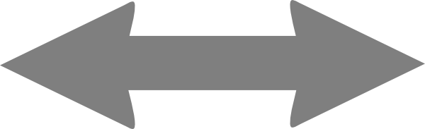

The Set up your library page displays a panel for each app you installed.
•Wikipedia & ZIM content includes articles, video, and other media, organized into collections (23 categories in all, including Reference, Learning, Tools, Media, and Kids).
•Maps automatically includes the basic world map. You can optionally add Full-Quality Regions for a specific area (a quick, light download you can do anytime after setup), or Rebuild the full maps for global high detail (a large download, done all at once).
•Kolibri courses includes lessons, videos, and exercises. As of this writing, the English catalog includes 42 items, such as Khan Academy, MIT Blossoms, and TED-Ed Lessons.
•Books includes thousands of ebooks.
1.Tap the Wikipedia & ZIM content panel. A new page is displayed. 2.If you want to download content in a different language, tap the Language menu, then make your selection. 3.To search all content, enter a search term in the Search titles… field. If a title matches the term, it will be displayed. 4.To filter the content by category, tap one of the following tags: All, Reference, Learning, Tools, Media, or Kids. A list of content providers and the number of resources they offer will be displayed. 5.Tap a content provider. A list of content options and the amount of required storage space is displayed. 6.To add a content option: •Tap the box to select the content. You can select more than one item on the page. •Tap Add to selection. You’ll return to the Wikipedia & ZIM content page. 7.To add more content, repeat steps 3–6. 8.When you’re finished, tap Review selection. The Ready to download? page is displayed, listing the items you selected. 9.Tap Add to your setup. 10.Tap Continue. The download will begin. When setup is complete, you can view the content in the library. |
1.Tap the Library tab at the bottom of the screen, then tap + Get more. The Get more page is displayed. 2.Tap Books. The Books page is displayed. 3.Search and filter books using these options: •To search by term, tap the Search books field, then enter a term. •To filter books by language, tap All languages, then tap your choice. The button label will update to show the language you chose. •The Popular and Educational buttons let you filter books based on those categories. You can only choose one at a time. If you tap Popular, the book list will update to show popular books. If you tap Educational, the book list will update to show educational books. •To show books that are currently downloaded on your device, tap My books. •To increase the potential number of titles shown in the book list, scroll to the bottom of the page and tap Load more. 4.To select a book to add, tap the panel showing its title and author. When you tap a panel, the word “Selected” will replace the author’s name. You can select multiple books to download at once. 5.When you are finished selecting books, tap Review selection. 6.The Ready to add these books? page is displayed. Tap Add # to library, where # will be the number of books you added in step 4. 7.The Finishing setup page is displayed, including a download progress bar. When the download is finished, the main Knowledge to Go page is displayed. To access any books you’ve added, tap Read a book. |
Kolibri organizes video content into “channels” that contain resources from different providers. There are two different ways to add Kolibri courses: through the standard K2Go interface, which is similar to the steps to download Wikipedia & ZIM content, or by using the Kolibri app in the library. This section covers using the K2Go interface. To add courses, follow these steps: 1.Tap the Library tab at the bottom of the screen, then tap + Get more. 2.The Get more page is displayed. Tap Kolibri courses. A page of course providers or “channels” is displayed. Next to each channel, the amount of space required to install all of the channel’s content is displayed. 3.If you have enough disk space to download everything and you want all of the content, tap the box at the left of the channel’s name. 4.If you don’t want to download all of the content, tap > at the right. A list of the channel’s resources are displayed. You can tap a box to select all of the content, or press > again to choose a selection. Repeat this step until you’ve selected all of the content you want to download. 5.When you’re done selecting content, tap Review selection at the bottom of the page. The Ready to download page is displayed. 6.Tap Add to your setup. The content will be downloaded. You can tap Run in background to continue exploring the app while the content is downloaded. |
Basic maps are included with every edition, so most users don't need to do anything on this panel during setup. To add more maps, follow these steps: 1.Tap the Library tab at the bottom, then tap + Get more. 2.Tap the Maps panel. A page confirming that basic maps are included is displayed. 3.Review the two ways to add more map detail, as follows: ▪Full-Quality Regions. Add sharp detail for a specific area, such as your city or region. This requires internet access, and can be done anytime after setup from the Maps app itself. See “Add detail to your maps later” below. ▪Rebuild the full maps. Replaces the basic world map with global satellite imagery, 3D terrain, and higher detail everywhere, at a quality you choose. This is the only maps action available during setup, and can require tens to hundreds of GB and take minutes to hours. 4.In most cases, it is best to accept the default (basic maps), and add detail for specific regions or rebuild the maps later, once you know which areas you need. Tap Continue. If you want to rebuild the full maps now instead, tap Rebuild the full maps and follow the steps in “Rebuild the full maps” below. After setup, you can add more map detail at any time from Library → Maps, or from the Maps app itself. There are two ways to do this:
|
If you have access to the internet, you can add more content to your library at any time. 1.Tap Library to display the current library. 2.Tap + Get more. The Get more screen is displayed. To download more, follow the steps above for each type of content. |
